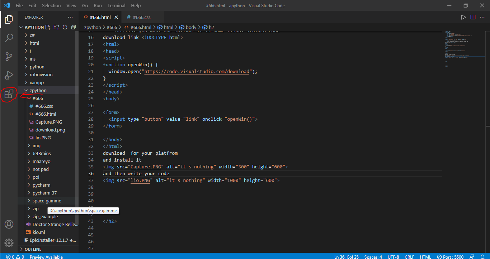

This is a larn html
fist you want one softwar it is name visual stuideo code
download link
download for your platfrom
and install it
and then write your code

click on livesever open and then
now you want to publish without watermark to you uplode
or with water mark with water mark you publish with github is best platfrom to publish web
you no html to you use a w3school it is a best platfrom for larn